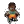

| - | Character | Speed | - | - | Score | - |
|---|---|---|---|---|---|---|
| Aria | 14:50.45 | 376th | 2348 | 2043rd | ||
| Bard | 6:00.06 | 250th | - | - | ||
| Bolt | 7:42.31 | 218th | 1982 | 1178th | ||
| Cadence | 10:22.14 | 560th | - | - | ||
|  | Diamond | 11:01.34 | 333rd | - | - | |
| Dorian | 7:18.59 | 191st | 980 | 2594th | ||
| Dove | 8:29.20 | 722nd | 269 | 4092nd | ||
| Eli | 16:59.88 | 304th | 2935 | 1956th | ||
| Mary | 11:51.35 | 152nd | 2209 | 1880th | ||
| Melody | 13:50.64 | 730th | 6002 | 909th | ||
| Monk | 12:22.24 | 128th | 1735 | 3356th | ||
| Nocturna | 13:45.22 | 918th | 8480 | 2779th | ||
| Tempo | 6:43.05 | 181st | 3511 | 1890th | ||
| Coda | - | - | - | - | ||
| Story | - | - | 8686 | 1484th | ||
| 9char | - | - | 2619 | 1357th | ||
| 13char | - | - | 3754 | 378th |
| Speed | Aria | Bard | Bolt | Cad | Dia | Dor | Dove | Eli | Mary | Mel | Monk | Noc | Tempo | Coda |
|---|---|---|---|---|---|---|---|---|---|---|---|---|---|---|
| Hard | - | - | - | 17:19.2880th | - | - | - | - | - | - | - | 19:16.92135th | - | - |
| NR | - | - | - | 18:28.06173rd | - | - | - | - | - | - | - | - | - | - |
| Rando | - | - | - | 15:18.5987th | - | - | - | - | - | - | - | - | - | - |
| Phasing | - | - | - | 16:16.67140th | - | - | - | - | - | - | - | - | - | - |
| Mystery | - | - | - | 17:58.2865th | - | - | - | - | - | - | - | - | - | - |
| Score | ||||||||||||||
| Hard | - | - | - | 18781328th | - | - | - | 12378th | - | - | - | 24244167th | - | - |
| NR | - | - | - | 15801998th | - | - | - | - | - | - | 6743rd | - | - | - |
| Rando | - | - | - | 25972181st | - | - | - | - | - | - | - | - | - | - |
| Phasing | - | - | - | 19901576th | - | - | - | - | - | - | - | - | - | - |
| Mystery | - | - | - | 1527875th | - | - | - | - | - | - | - | - | - | - |
| Deathless | - | - | - | 9-5-3392nd | - | - | - | - | - | - | - | - | - | - |
Last Updated:2021/11/25 01:49